【陆军】又见朱日和
2014-08-29 19:35:00
原文网址：https://blog.udn.com/MengyuanWang/108908629
一年一度的上合组织（上海合作组织）军事演习正在进行之中。今年轮到中共主办，共军希望展示刚刚扩建升级的朱日和基地，所以决定在那儿举行。俄军来了一个1000人的合成兵种戦斗羣，中亚诸国各自送了营级或连级的单位，地主国不但派出了一个5000人的加强旅，而且包办了客军的后勤补给，颇有炫耀的意味。
这个加强旅来自共军最精锐的北京卫戍部队第38集团军，装备了中共陆军最先进的各式武器，其中的许多地面车辆在此前只有在鐡路或公路上被运送的照片，所以这次演习的画面很有意思，在此和大家分享。 在地面车辆中，最重要的当然是坦克。38军是共军序列中唯一装备了最新的99式三期大改型号的。99式三期大改换装了全新的炮塔，外观上与前期的99式颇有不同。我通常靠其正面左侧（照片里的右手边）的外形来识别：那里的复合装甲表面低平，以配合新增的大型观瞄镜。观瞄镜上方的雷射主动防御系统（亦即当AH64准备对其发射雷射制导的地狱火飞弹时，99式会射出更强的雷射来摧毁AH64的光电瞄准仪；即使是无制导，电视制导或线导的攻撃，一般也必须先用雷射测距，99式就能在对方武器发射之前摧毁其光电器材）太过厉害，有可能误伤友军，似乎用胶带包得密密实实的。
在地面车辆中，最重要的当然是坦克。38军是共军序列中唯一装备了最新的99式三期大改型号的。99式三期大改换装了全新的炮塔，外观上与前期的99式颇有不同。我通常靠其正面左侧（照片里的右手边）的外形来识别：那里的复合装甲表面低平，以配合新增的大型观瞄镜。观瞄镜上方的雷射主动防御系统（亦即当AH64准备对其发射雷射制导的地狱火飞弹时，99式会射出更强的雷射来摧毁AH64的光电瞄准仪；即使是无制导，电视制导或线导的攻撃，一般也必须先用雷射测距，99式就能在对方武器发射之前摧毁其光电器材）太过厉害，有可能误伤友军，似乎用胶带包得密密实实的。 99式三期大改使用了仿自德国的1500匹马力柴油机，功率与M1A2和豹二A7相当，但重量略轻，所以机动力居世界首位（根据瑞典陆军20年前的评估，法国的Leclerc其马力有灌水之嫌，实际机动力还不如M1）。99式的复合装甲为原本来自豹二（共军在1980年代引进了几辆豹二坦克做为技术参考）的间隙式合金装甲大幅升级而成，防护力超过1000公厘RHAe（Rolled Hardened Armor equivalent），比豹二A7的940公厘和M1A2SEP的960公厘还要高。其125公厘口径ZPT-98滑膛炮，一般西方媒体以为是仿制苏联的2A46坦克炮，其实共军只拷贝了2A46的自动装弹机，ZPT-98是中共利用1980年代引进的瑞士预压制钢技术自行开发的，最新改型的性能超过了德国Rheinmetall的L55 120公厘坦克炮，使用贫铀（Depleted Uranium）长杆脱壳穿甲弹（APFSDS，Armor-Piercing Fin-Stabilized Discarding-Sabot）时在2000公尺距离上仍能撃穿1000公厘RHAe以上的装甲，也是世界之冠。
99式三期大改使用了仿自德国的1500匹马力柴油机，功率与M1A2和豹二A7相当，但重量略轻，所以机动力居世界首位（根据瑞典陆军20年前的评估，法国的Leclerc其马力有灌水之嫌，实际机动力还不如M1）。99式的复合装甲为原本来自豹二（共军在1980年代引进了几辆豹二坦克做为技术参考）的间隙式合金装甲大幅升级而成，防护力超过1000公厘RHAe（Rolled Hardened Armor equivalent），比豹二A7的940公厘和M1A2SEP的960公厘还要高。其125公厘口径ZPT-98滑膛炮，一般西方媒体以为是仿制苏联的2A46坦克炮，其实共军只拷贝了2A46的自动装弹机，ZPT-98是中共利用1980年代引进的瑞士预压制钢技术自行开发的，最新改型的性能超过了德国Rheinmetall的L55 120公厘坦克炮，使用贫铀（Depleted Uranium）长杆脱壳穿甲弹（APFSDS，Armor-Piercing Fin-Stabilized Discarding-Sabot）时在2000公尺距离上仍能撃穿1000公厘RHAe以上的装甲，也是世界之冠。 99式三期大改和WZ-502G（此为厰商编号，共军编号未知，可能是ZBD04A）步兵戦车（IFV，Infantry Fighting Vehicle）展开衝撃队型。除了世界领先的机动力，防护力和火力之外，99式三期大改还配备有一流的无线网络，先进的红外线观瞄设备和独一无二的雷射主动防御系统，因此其造价约为200多万美元，比96A式高出不只一倍（勇虎式坦克造价350万美元，性能只与老掉牙的59式改型相当；没自己的技术就只好任人宰割）。共军只有在适合重型坦克集群作戦的北京军区和渖阳军区部署了99式。面对台湾的南京军区部署的是96A式中型坦克。
99式三期大改和WZ-502G（此为厰商编号，共军编号未知，可能是ZBD04A）步兵戦车（IFV，Infantry Fighting Vehicle）展开衝撃队型。除了世界领先的机动力，防护力和火力之外，99式三期大改还配备有一流的无线网络，先进的红外线观瞄设备和独一无二的雷射主动防御系统，因此其造价约为200多万美元，比96A式高出不只一倍（勇虎式坦克造价350万美元，性能只与老掉牙的59式改型相当；没自己的技术就只好任人宰割）。共军只有在适合重型坦克集群作戦的北京军区和渖阳军区部署了99式。面对台湾的南京军区部署的是96A式中型坦克。 WZ-502G的背面照，背景是一辆99式在行进间射撃。WZ-502是共军在1990年代末期引进俄国BMP3步戦车炮塔装在自行开发的车体而成，第一代的共军编号是ZBD97，2004年小改之后，型号叫ZBD04，是目前共军的主要履带式步戦车。ZBD04具有世界第一的水上速度，火力则有世界领先的100公厘+30公厘双管炮，但是防护力颇有问题，正面装甲只能抵抗25公厘穿甲弹（而国军仍旧浪费了十几年和无数的预算准备为云豹装甲车配备25公厘炮，真是脑残之极），所以共军在对其升级改进时，牺牲了其渡海能力（但是仍能在无准备状况下直接渡河），增强装甲到能抵御30公厘炮弹的地步，重量也从20公吨增加到24公吨，不过引擎因不须喷水，功率有相应的增加，所以机动性能没有下降。德国最新的Puma步戦车已经能抵御常见的RPG（Rocket-Propelled Grenade，火箭弹），不过共军不愿让步戦车增肥到30公吨以上，所以将来WZ-502G可能会配备主动防御导弹。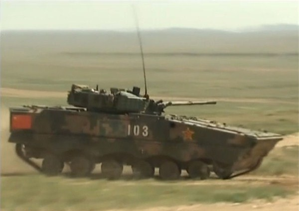WZ-502G的侧面照。其新型焊接装甲清晰可见。与旧式的ZBD04相比，其正面的Glacis Plate（车体前面上方的倾斜装甲板）有了明显的斜度，这是因为WZ-502G不再须要航渡三级海况，可以改用防护力较高的倾斜装甲（Sloped Armor）。其侧面的波浪形防护板也是个明显的特症。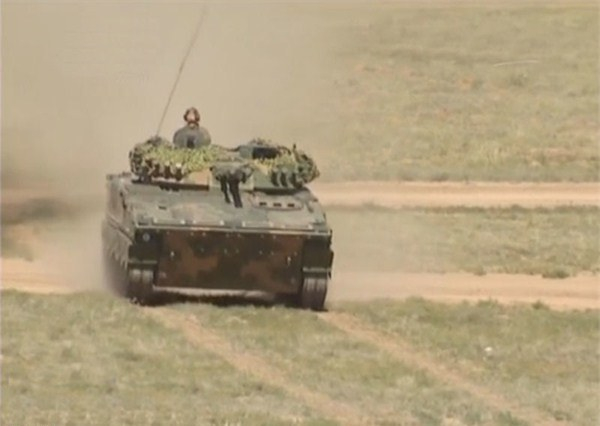WZ-502G的正面照。可以看出其引自BMP3的100公厘+30公厘并列双管炮，和新式的大型观瞄设备。在装甲车辆的火力，防护力和机动力折中选择上，共军基本上寻求均衡发展，必要时牺牲机动力，更必要时则牺牲一点防护力，火力享有最高优先。所以不只是99式改型，连最新的96A和WZ-502G都装上了最先进也最昂贵的上反稳像式瞄导合一观瞄镜组加配红外线热像仪。勇虎式坦克用的是25年前M1原型配备的扰动式火控系统，比上反稳像式落后了两代，比旧型的99式用的下反稳像式落后了一代。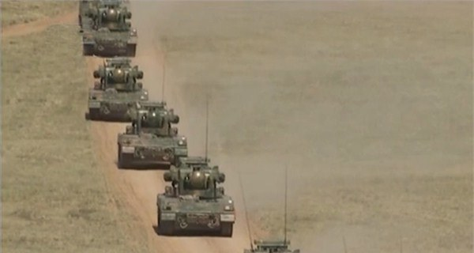针对AH64这种武装直升机，共军重装集团军的机动防空是靠着PGZ-07式履带式双管35公厘自行防空炮。这些35公厘炮源自1980年代引进的瑞士Oerlikon防空炮，国军也有装备，叫做35快炮。不过共军已经对其进行了多次升级改进，首先是研发了自动装弹机，后来搭配了新雷达和光电系统，装在通用中型履带车上，成为99式的标准护卫。最新的改型是为了轻装旅开发的装在8X8轮式步戦车（即下列的ZBL08所用的通用底盘）上的单管型号，重新设计了炮膛，射速与双管炮齐平，不过还没有批量生產。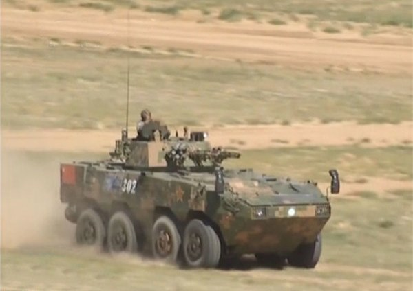ZBL08，是共军8X8轮式装甲车系列的基本戦斗型号，轻装旅的骨干，主炮为30公厘机关炮。在重装集团军里，主要执行侦察搜索任务。中共的军用钢材已有长足的进步，装甲车底盘没有云豹之类的龟裂问题。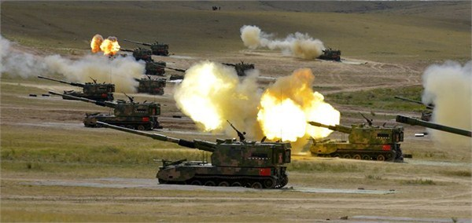PLZ05，共军重装集团军里的标准155公厘榴弹炮。外销型为52倍径，自用型为54倍径。其射程和精度都达到了或超过了德国的Panzerhaubitze 2000的水准，只在射速上稍有不及；美军和国军的M109系列就不用提了。其实所有现代的榴弹炮都源自加拿大的弹道天才Gerald Bull所发明的ERFB技术（Extended Range，Full Bore），他的原始设计叫GC-45，后来奥地利和南非分别商品化为GHN-45和G-5榴弹炮。共军在1980年代自奥地利引进了这项技术，发现ERFB的真正最佳倍径在52以上，但是Bull受1970年代的技术限制，只把倍径从以往的39提高到45。共军的第一步是仿制GHN-45，履带化后的结果叫做PLZ45，近年来已经外销到科威特、沙乌地阿拉伯和阿尔及利亚，口碑很好。第二步是完全消化吸收ERFB的精髓，自行设计制造世界领先的155公厘榴弹炮。PLZ05是这型新式54倍径榴弹炮的重装履带型。共军的轻装部队则装备类似法国CAESAR（CAmion Equipe dun Systeme d'ARttilerie）系统的卡车炮。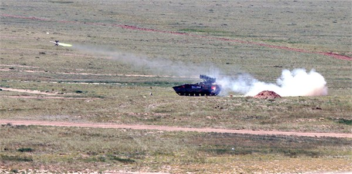AFT-10反坦克导弹的专用履带式发射车。AFT-10是光纤制导的重型反坦克导弹，与德军的Polyphem飞弹相似。目前的谣言是射程只有10公里左右，不过我个人觉得这不可信；中共的火箭发射药配方儘略次于美国，和俄国，以色列和西欧在同一个檔次，而国际上这类射后锁定的电视导引飞弹射程自25公里至60公里不等，中共再不济，这型全新的导弹也应该有25公里的射程。不论如何，AFT-10和它专用的履带式发射车（从照片上看来是WZ-502G的衍生型）是第一次实件曝光。在戦场上，AFT-10会躲在99式和WZ-502G之后，利用其较长的射程，打撃敌方的装甲车辆。由于光纤可以将红外线影像实时传回发射车，这类导弹具有发射后鎻定的能力，可以打撃敌后隐蔽的目标；尤其是如Panzerhaubitze 2000这类的新型远程自走榴弹炮，具有打了就跑的能力，传统的反炮兵雷达只能对其发射地点进行定位，必须使用AFT-10这様的光纤制导导弹才能将其在转移阵地的过程中撃毁。
WZ-502G的背面照，背景是一辆99式在行进间射撃。WZ-502是共军在1990年代末期引进俄国BMP3步戦车炮塔装在自行开发的车体而成，第一代的共军编号是ZBD97，2004年小改之后，型号叫ZBD04，是目前共军的主要履带式步戦车。ZBD04具有世界第一的水上速度，火力则有世界领先的100公厘+30公厘双管炮，但是防护力颇有问题，正面装甲只能抵抗25公厘穿甲弹（而国军仍旧浪费了十几年和无数的预算准备为云豹装甲车配备25公厘炮，真是脑残之极），所以共军在对其升级改进时，牺牲了其渡海能力（但是仍能在无准备状况下直接渡河），增强装甲到能抵御30公厘炮弹的地步，重量也从20公吨增加到24公吨，不过引擎因不须喷水，功率有相应的增加，所以机动性能没有下降。德国最新的Puma步戦车已经能抵御常见的RPG（Rocket-Propelled Grenade，火箭弹），不过共军不愿让步戦车增肥到30公吨以上，所以将来WZ-502G可能会配备主动防御导弹。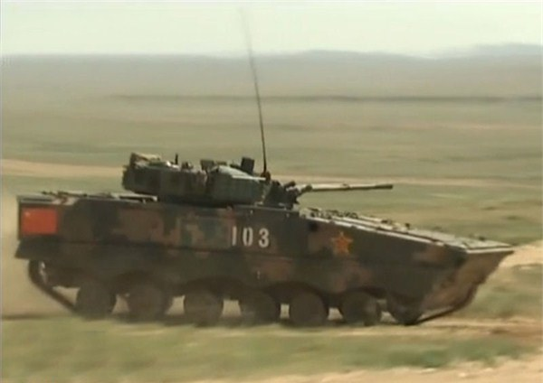WZ-502G的侧面照。其新型焊接装甲清晰可见。与旧式的ZBD04相比，其正面的Glacis Plate（车体前面上方的倾斜装甲板）有了明显的斜度，这是因为WZ-502G不再须要航渡三级海况，可以改用防护力较高的倾斜装甲（Sloped Armor）。其侧面的波浪形防护板也是个明显的特症。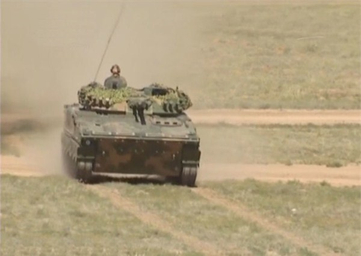WZ-502G的正面照。可以看出其引自BMP3的100公厘+30公厘并列双管炮，和新式的大型观瞄设备。在装甲车辆的火力，防护力和机动力折中选择上，共军基本上寻求均衡发展，必要时牺牲机动力，更必要时则牺牲一点防护力，火力享有最高优先。所以不只是99式改型，连最新的96A和WZ-502G都装上了最先进也最昂贵的上反稳像式瞄导合一观瞄镜组加配红外线热像仪。勇虎式坦克用的是25年前M1原型配备的扰动式火控系统，比上反稳像式落后了两代，比旧型的99式用的下反稳像式落后了一代。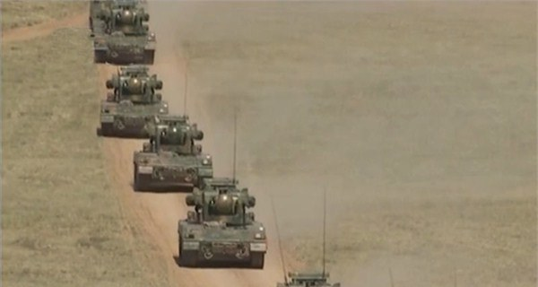针对AH64这种武装直升机，共军重装集团军的机动防空是靠着PGZ-07式履带式双管35公厘自行防空炮。这些35公厘炮源自1980年代引进的瑞士Oerlikon防空炮，国军也有装备，叫做35快炮。不过共军已经对其进行了多次升级改进，首先是研发了自动装弹机，后来搭配了新雷达和光电系统，装在通用中型履带车上，成为99式的标准护卫。最新的改型是为了轻装旅开发的装在8X8轮式步戦车（即下列的ZBL08所用的通用底盘）上的单管型号，重新设计了炮膛，射速与双管炮齐平，不过还没有批量生產。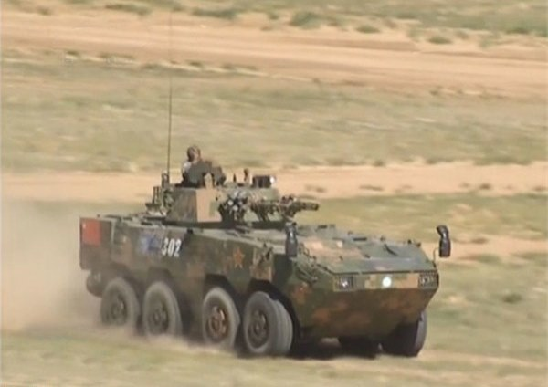ZBL08，是共军8X8轮式装甲车系列的基本戦斗型号，轻装旅的骨干，主炮为30公厘机关炮。在重装集团军里，主要执行侦察搜索任务。中共的军用钢材已有长足的进步，装甲车底盘没有云豹之类的龟裂问题。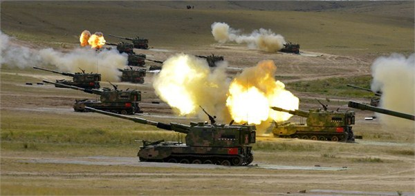PLZ05，共军重装集团军里的标准155公厘榴弹炮。外销型为52倍径，自用型为54倍径。其射程和精度都达到了或超过了德国的Panzerhaubitze 2000的水准，只在射速上稍有不及；美军和国军的M109系列就不用提了。其实所有现代的榴弹炮都源自加拿大的弹道天才Gerald Bull所发明的ERFB技术（Extended Range，Full Bore），他的原始设计叫GC-45，后来奥地利和南非分别商品化为GHN-45和G-5榴弹炮。共军在1980年代自奥地利引进了这项技术，发现ERFB的真正最佳倍径在52以上，但是Bull受1970年代的技术限制，只把倍径从以往的39提高到45。共军的第一步是仿制GHN-45，履带化后的结果叫做PLZ45，近年来已经外销到科威特、沙乌地阿拉伯和阿尔及利亚，口碑很好。第二步是完全消化吸收ERFB的精髓，自行设计制造世界领先的155公厘榴弹炮。PLZ05是这型新式54倍径榴弹炮的重装履带型。共军的轻装部队则装备类似法国CAESAR（CAmion Equipe dun Systeme d'ARttilerie）系统的卡车炮。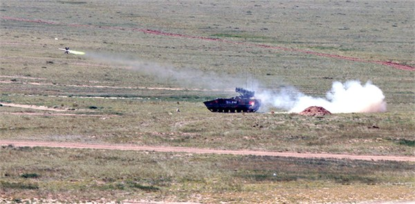AFT-10反坦克导弹的专用履带式发射车。AFT-10是光纤制导的重型反坦克导弹，与德军的Polyphem飞弹相似。目前的谣言是射程只有10公里左右，不过我个人觉得这不可信；中共的火箭发射药配方儘略次于美国，和俄国，以色列和西欧在同一个檔次，而国际上这类射后锁定的电视导引飞弹射程自25公里至60公里不等，中共再不济，这型全新的导弹也应该有25公里的射程。不论如何，AFT-10和它专用的履带式发射车（从照片上看来是WZ-502G的衍生型）是第一次实件曝光。在戦场上，AFT-10会躲在99式和WZ-502G之后，利用其较长的射程，打撃敌方的装甲车辆。由于光纤可以将红外线影像实时传回发射车，这类导弹具有发射后鎻定的能力，可以打撃敌后隐蔽的目标；尤其是如Panzerhaubitze 2000这类的新型远程自走榴弹炮，具有打了就跑的能力，传统的反炮兵雷达只能对其发射地点进行定位，必须使用AFT-10这様的光纤制导导弹才能将其在转移阵地的过程中撃毁。
【后注一】《简氏防务周刊》（Jane's）在九月初报导了AFT-10在这次演习中的出现；文内提到中国航天科工集团公司（CASIC）在2012年就开始推销AFT-10的外销卡车版，CM-501G，射程70公里。显然自用的AFT-10其性能不可能比外销版的缩水，所谓的10公里只是保密用的烟幕。现代的远程榴弹炮射程普遍在50公里左右，70公里的射程对光纤制导导弹来说是很合理的。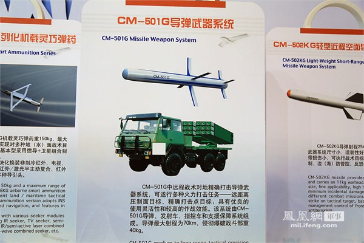
CM-501G的广告板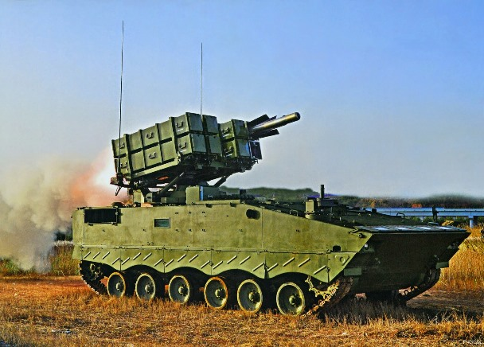2014年十月出现的AFT-10公关照片。
【后注二】共军把火力放在装甲车辆设计的第一优先，并不只是我的揣测；99式坦克的总设计师祝榆生生前也是这么说的。祝榆生，四川重庆人，刚于2014年十月23日去世于北京。
【后注三】AFT-10在2015年九三阅兵式中出现，已改称为红箭10型；官方资料仍号称射程只有10公里，或许它是CM-501G的缩小型吧。99式三期大改被命名为ZTZ-99A式，引擎功率被证实为1600马力，显然中共的技术人员对它做了改进。WZ-502G则命名为ZBD-04A。
8 条留言
我看到的科普贴说98是为1999阅兵赶制的，数量据说为12辆，后发展为98改，正式命名是ZTZ-99
之后关于99式、99改、99小改、99大改。。。。。。装备数量也搞不清了（王sir估算过么？）。。。。。。
99大改正式命名叫做99A对吧？
看到网上又有99A2云云，脑袋都大了。
以前不是说大改要换140的炮么？阅兵看到的（应该就是99大改吧）没换140，难道以后还有进一步改进99大改的潜力与必要？
日本韩国的新式坦克单价都飙到800+W美刀了，99大改200多W美刀也太白菜了吧。。。
鬼子说一辆10干翻3辆99，不知道他是说十几年前那个99还是99大改...中日韩三国的最新坦克应该不存在谁对谁有压倒优势吧
以往的99A2之类的，是外界猜的。这次的99A是解放军的正式命名。
140有样炮，转技术储备。
日本媒体在军事上面的言论基本是废话。10式除了价格没有别的优势。
老百姓相信绿营政客和绿媒头脑发热要台独，却全然不想后果是武统时人家绿营政客躲老美当寓公，留下老百姓血流成河。傻傻地相信老美真会为了帮台湾独立而出兵，却全然不想出卖盟友是老美的一贯本性
一旦兵戎相见以武统来解决台湾问题, 美日是绝对不会为了台湾人而流血的; 既然如此, 那你干嘛还甘心去做人家的附庸? 去做汉奸? 洪秀柱有心把台湾的前途带回正路，但她在正式提名前就被做掉，不但证明台湾政局已经沉沦到自动淘汰所有改革力量的地步，真正理解台湾处境的少数人只怕也会加速外逃
整体上来说，中共对台湾的让利已经是相当慷慨的了。台湾走上现在的这条死路，最终还是只能怪自己。
豹二的间隙式装甲勉强属于第一代复合装甲，这个技术放在80年已经早早过时。80年代的主流复合装甲就已经发展到半约束和全约束陶瓷装甲以及回爆理论。豹2A6到现在还是没有得到先进结构的陶瓷装甲。A7主要在A6的基础上升级了城市战套件，侧后防护增强，正面防护有所减弱，不可能达到900mmRHA的级别。
中国对复合装甲的研究始于得到一辆T-64，之后几十年里一直没有中断系统性的研究，在80年代的外贸型坦克上已经应用了玻璃纤维网包裹的半约束型装甲，比多层间隙装甲的技术要领先一代。
纵观复合装甲技术的发展史，唯有中苏英发展出完善的复合装甲理论和产品系列，而美国在购买到英国的乔巴姆复合装甲结构技术后（这也是世界上唯一一例复合装甲技术转让），目前的应用水平已超过英国。
美国战后的复合装甲发展没有成体系发展，而是根据从德国搜缴到得资料进行了试验，于52年进入样品试产，主材为氧化硅，还是有聚氨酯以及锯末的成分，并最终制成了36个嵌有不同类型复合层的炮塔并于58的夏天进行了全面的射击实验，最终结论为：在和RHA具有相同质量的前提下，能够获得比RHA更优良的对射流的防护能力，而能够获得与RHA非常接近的抗穿甲弹的能力，而非所谓的高出XXX%。但是这个结构的装甲，在重量和体积上没有任何优势，最终未能得到有效应用（主要原因还是防护系数过低导致的）美国在完成了德国的资料深入研究后，没有建立复合装甲全套科研体系，导致了整个50-70年代末复合装甲技术发展极其缓慢，西方大致情况也是如此，只有英国在德国的研究基础上（尚不知是美国提供的还是自己搜缴的）进行了系统和全面的科研，并最终在30年后收获了西方第一款实用化的复合装甲-乔巴姆。
至于80年代后的先进陶瓷结构复合装甲的技术，目前仅掌握在美中俄三国手中（美国的贫铀装甲是以贫铀合金作为装甲的强化和支撑结构，本质上仍旧是陶瓷装甲），而这三国也完全没有转让装甲技术的意思。
而乔巴姆的有效性是建立在大厚度大重量的基础上的，这一点上，比起约束型复合装甲， 本身就是一种落后，迫使坦克重量急速上升。但即使如此，英国人在转让给德国人复合装甲技术时仍留了一手，导致豹2A4在土耳其竞标时大大的出丑（被T80y的穿甲弹正面击穿炮塔）。
豹2A6炮塔正面装甲块的厚度都没有800mm级别，如果其复合装甲防护能力达到900mm级别，只能说明德国人的复合装甲技术冠绝全球，并且防护系数达到匪夷所思的地步。这显然是不可能的。
有人认为M1A2的防护力远高于豹二，也高于99式。我想因为保密的关系，所有这类的消息都有极大的主观成分+厂商吹嘘。我在正文里用的数据的确没有坚实的基础，不过其他的数据也都有一样的毛病。
我个人认为M1、豹二和99式的防护力之间没有代差。